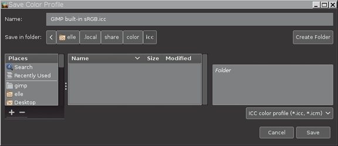

|

|
 |
| 6.12. Discard Color Profile |

|
6.14. Soft-Proof Profile |
allows you to save to disk a copy of the ICC profile that's assigned to your image.
is useful whenever you want an on-disk copy of whatever ICC profile is assigned your image.
can even be used to make an on-disk copy of GIMP's built-in sRGB profile.
Let's say you want to save a copy of the GIMP built-in sRGB profile to disk.
Open an image that has a GIMP built-in sRGB profile assigned.
Select → → :

The "Save Color Profile" dialog is divided into three panels. Use the left and center panel to navigate to where you want to save the profile.
When you save a copy of the profile to disk, it's perfectly OK to change the suggested file name (some programs, and especially command line utilities, don't work as easily with file names that include spaces). If you change the file name, it's a good idea to use either ".icc" or ".icm" as the file extension (some programs won't recognize an ICC profile that uses some other file extension).
When you've chosen a location and typed in a file name, click on the button to save a copy of the profile to disk.
You can even also overwrite an existing ICC profile. After selecting an existing profile file, the right panel will show informational tags that are embedded in the selected profile.